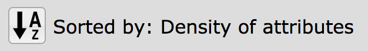
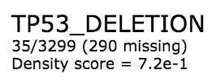
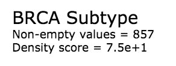
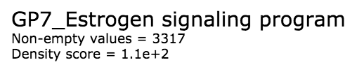
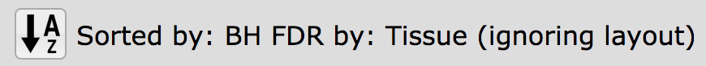
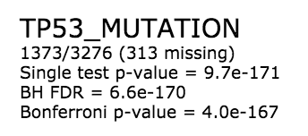
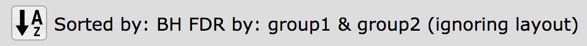
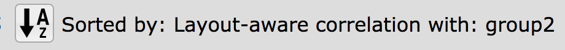
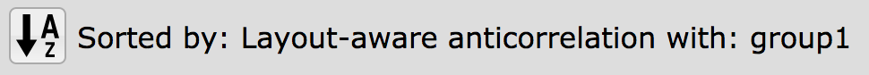
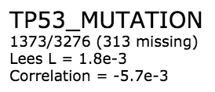

Attribute Information¶
Each attribute has information displayed below the attribute name in the Select Attribute list and in the Short List. This information is specific to the data type and the statistical sort in effect.
Data Types and Density Sort¶
The default sort of attributes in the Select Attributes list is by density. Below is the message that is displayed in the header with the density sort in effect:
{kind=link}
Below are examples of the information displayed for the density sort for each of the data types: binary, categorical and continuous, respectively.
  {kind=link}
{kind=link}
{kind=link}
Binary attributes show values counts as count_of_ones/count_of_zeros (count_of-empty-or-NA) while categorical and continuous attributes show the count of values that don’t include empty or NA values.
Technical information may be found at Density (Spatial Smoothing Scalar).
Layout-Independent Statisitics¶
Below is the message that is displayed in the header with the layout-independent statistic sort in effect:
{kind=link}
Example attribute information:
{kind=link}
Technical information may be found at Layout Independent: Attribute Enrichment Analysis.
Differential Statisitics¶
Below is the message that is displayed in the header with the differential statistic sort in effect:
{kind=link}
An example attribute display for differential statistics is the same as above for layout-independent statistics.
Technical information may be found at Layout Independent: Attribute Enrichment Analysis.
Layout-Aware Statisitics¶
Below is the message that is displayed in the header with the positive correlation layout-dependent statistic sort in effect:
{kind=link}
Below is the message that is displayed in the header with the negative correlation layout-dependent statistic sort in effect:
{kind=link}
An example attribute display for layout-aware statistics:
{kind=link}
Technical information may be found at Layout Dependent: Spatial Correlation Analysis.